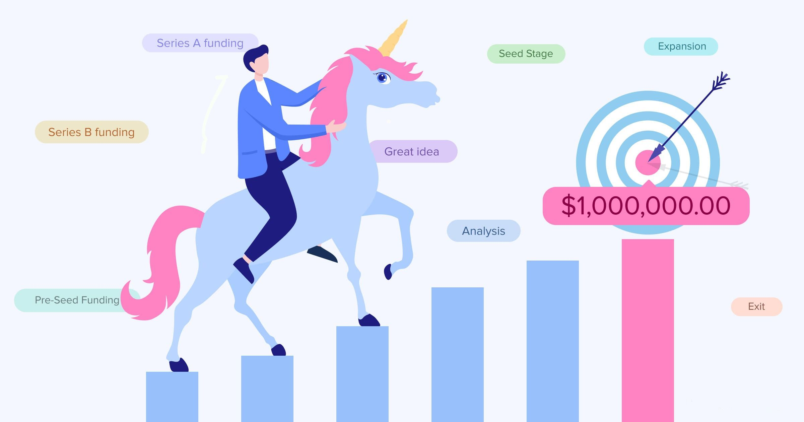

Heart Disease Prediction Using Machine Learning
In this project, I developed a machine learning model for predicting heart disease. The objective was to use data analytics and machine learning techniques to accurately forecast the likelihood of heart disease in patients. Using Python and various data science libraries, I created predictive models based on features such as medical history, lifestyle factors, and demographic information. The goal was to provide healthcare professionals with a tool to assess and mitigate cardiovascular risks effectively.
Power BI Profit Report Dashboard
In this project, I developed a Power BI dashboard for a store specializing in office equipment and appliances across the United States. The objective was to provide comprehensive financial insights and identify key areas for improvement. I created a series of visualizations culminating in an interactive dashboard, allowing stakeholders to explore the data and make informed decisions.
Analyzing International Debt Statistics

In this notebook, I analyzed international debt data collected by The World Bank. The dataset includes information about the amount of debt (in USD) owed by developing countries across several categories. I answered key questions such as the total amount of debt owed by the countries listed, the average amount of debt owed by countries across different debt indicators, among others.
Analyzing Industry Carbon Emissions
In this project, I analyzed industry carbon emissions data from nature.com. The dataset contains product carbon footprints (PCFs) for various companies, measured in CO2 equivalents. Stored in a PostgreSQL database, the table "product_emissions" details PCFs by product and the stage of production. This analysis helps understand greenhouse gas emissions attributable to products.
Analyzing Unicorn Companies

In this project, I analyzed trends in high-growth unicorn companies for an investment firm. The goal was to identify which industries are producing the highest valuations and the rate at which new high-value companies are emerging. Using their unicorns database, I provided insights to help the firm structure their portfolio and stay ahead of industry trends.